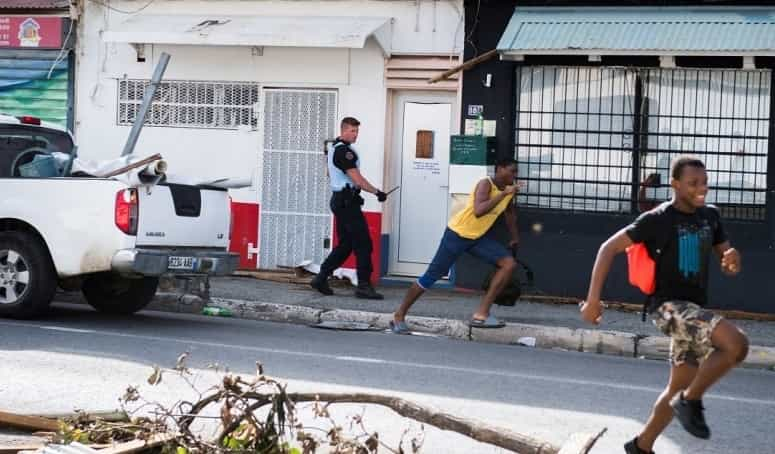
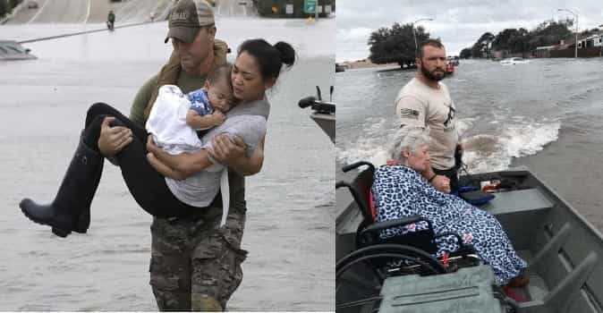
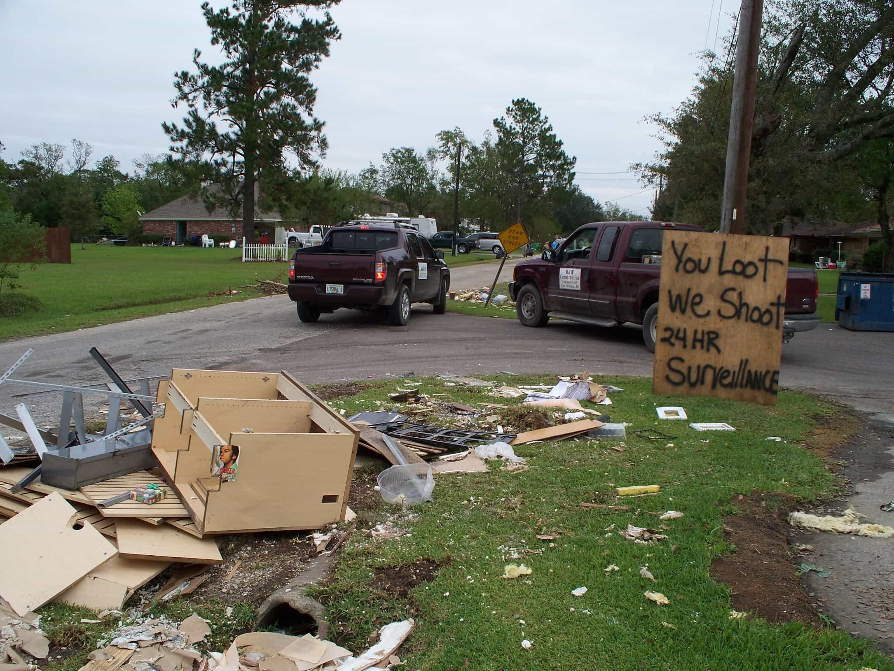
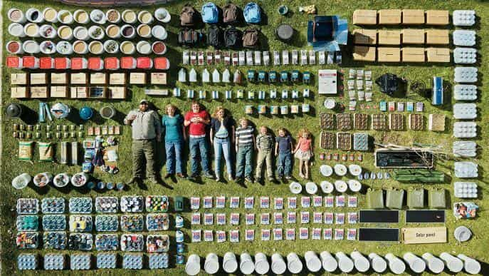
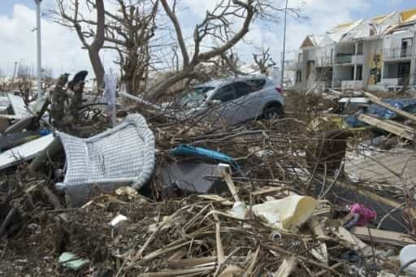

Earlier this month, Hurricane Irma hit with unusual force the Caribbean island of Saint Martin, following Hurricanes Cindy and Harvey that devastated the Antilles and some parts of the United States in August. The post-apocalyptic images of looting and civil chaos that occurred on the island, and the damage control led by the media, showed how helpless the inhabitants were once the government abandoned them.
The media tries to silence St Martiners
In the first days following Irma, the narrative serfs of the French media kept repeating that the situation on the island of Saint Martin was under control, that there were limited human casualties compared to the violence of the hurricane. All was fine and dandy.
But angry voices of actual Saint Martiners kept rising on social media, describing a climate closer to a civil war, with numerous robberies at gunpoint, bodies washing ashore, and roaming bands of looters scavenging day and night. Those Facebook and Twitter posts, even after being seen millions of times are being deleted, as they conflict with the narrative.
The word salad peons employed by left-leaning newspapers were burning the midnight oil to have those testimonies “debunked” for some strange reason. Something tells me that the racial character of the looters worried the narrative peddlers.
The busiest to “debunk the rumours” are leftists rags such as Liberation and Le Monde’s “Les décodeurs”, who signed back in March a contract to fight “fake news” (read “anything that contradicts the narrative”) and target “hate speech”.
The non-exhaustive list of the controlled media in France
A French territory that looks more like Sierra Leone
Testimonies of inhabitants being robbed at gunpoint or beaten in broad daylight for meager possessions they managed to save after the storm spread all around the web. Those who were not armed could not defend themselves. Even the gendarmes present on the spot advised the locals to use any weapon they had at hand to defend themselves as the police forces were simply absent.
In Saint Martin, a crime-prone “abandoned territory of the Republic,” the disaster and dire situation aggravated the long-existing racial tensions on the island. An overwhelming majority of black looters preyed exclusively on whites as a mean of revenge against their wealthier situation and perceived “privilege”, targeting households that had weaker tenants or seemed empty of men.
The local police is helpless and are only authorized to shoot in the air to deter the scavengers.
The usual left-leaning wastes of human matter attempted damage control by pretending that the disturbing pictures of looters specifically targeting businesses and warehouses owned by whites, or snatching televisions appliances and jewelry, do so because “they are destitute after the catastrophe.”
The profile of the victims of this crime wave also reflect fundamental sexual realities. On one side, typical post-carousel “single moms with children” have nothing to eat but “cans of tuna and a few tomatoes.” Where is the man of the house? Where is the shelf of emergency food? And on the other side were males in their forties and fifties, armed and prepared, staying home with their families or confronting the looters and driving them away with their weapons.
The French government could not help

Paris is busy trying to control information and hide reality, showing Macron on the island with his sleeves rolled and pretending to care, while insisting that His Regressive Highness had to sleep on a camp bed and wash his manletness in a bucket.
But like Sylvester Turner, the incompetent mayor of Houston following Hurricane Harvey, the French government advised St Martiners to stay at home at all cost. Great plan when the house is flooded, the State tells you it is illegal to arm yourself, and there are less than two hundred soldiers sent to control an island of 37,000 inhabitants.
The state was warned a week before of the exceptional character of this hurricane and the island could have probably been evacuated, but virtually nothing was organised. And the locals watched helpless, as their homes and businesses got torn off the ground.
But some thrive in this situation. Following the “free for all” example of the looters, Air France quadrupled the price of the airfare for the ones trying to escape the island just like the airlines in the US for those fleeing the zones affected by the cyclones.
The fat girl at the beginning of the report justifies the looting:
Yes, we steal. They want to arrest us but they don’t understand that we need clothes and other items because we do not have anything left under our roof.
She has nothing because she did not plan any back-up despite living in a region prone to natural disasters, so she will steal the others’ property because they are richer. And why steal plasma screens and hardware if you only need “food and clothing” and there is no electricity? The theft rationalisation hamstering is strong.
Trust the state, see where that gets you

Even in the “first world,” all goes through the window when the state bails and we revert back to the elementary law of the jungle. The groups that trust the government blindly and think they will be helped because they are “productive member of society”, vote for liberal “my feelings” party, and pay taxes are sadly mistaken. Maybe the all-too-common profile of the looters might help them snap back to reality.
The most credulous of St Martiners still think that Macron will do something for them. He came on the island and clumsily tried to prove that he has what it takes to be a leader. What do the sods who voted for him exactly expect from that empty suit? Muslim migrants are for him more important than a handful of his countrymen lost on some minor Caribbean rock.
The same happened in the United States where inhabitants had only each other to rely on and it was an overwhelming majority of civilian men that saved others. The media was prompt to paint them as “hillbillies” or “right-wing Trump voters,” suffering from an evident case of “toxic masculinity” while for the rest of the thugs in the city felt like Christmas came in early, busy looting Foot Locker stores for new Jordans.

From the evil masculine men deliver us, O Lord
In other news, this is also how the French magazine Charlie Hebdo, who got Aloha Snackbarred in 2015, thinks of Americans who grieved for them when times got tough. It does make you think…
“God exists! He drowned the Texas neonazis!”
Are you prepared?

This is a taste of what would happen on the mainland of any first world nation if a great disaster occurs. All escape routes cut and criminals know they are in a situation of virtual impunity.
My question to the readers of Return Of Kings: are you ready to face such a situation? Are you armed? Do you know how to defend yourself? Do you have a plan? Are you well-stocked with food? Do you have a close circle of four or five resourceful men that you can trust and band with if things turn ugly?

I took the habit of buying an extra tin of food and pack of rice every time I do my groceries. This way, I quickly find myself with an extra shelf of food in case of need. I have an escape plan, three close male friends on speed dial less than five miles from me, and I am reasonably confident that I can take care of myself.
I do not want to turn into a paranoid survivalist, but brutal reality checks like these always make me question my state of readiness. I could be in one of those St Martiners’ situation if the state abandons my city or region and it would be utter chaos in a matter of days.
Chacun pour soi et l’bon Dieu pour tous

In my mind, this incident reinforced the clear differences between what makes a government and what makes a country, which were not so clear and defined when I was younger. The country is made by its founding inhabitants, its monuments, nature, and history. The government is composed of low-lives that fill their pockets, ruling over, and pretending to represent and care about the majority group. It just cannot be trusted.
The multicultural myth and equalitarian false God has abandoned the elite and makes France’s urban centers look more and more like the ghettos of South Africa. Remember those who were forsaken on Saint Martin Island when you feel that you can trust your first world government.
Update: As I write these lines, Hurricane Maria has already hit the French island Martinique and this time is closing in on the coasts of Saint Martin, Dominica and Guadeloupe. Similar scenes of chaos and pillaging should be witnessed in the following days.
Read more: Washington Post Caught Plagiarizing US Government Propaganda On Ukraine Conflict


{kind=link}
{kind=link}